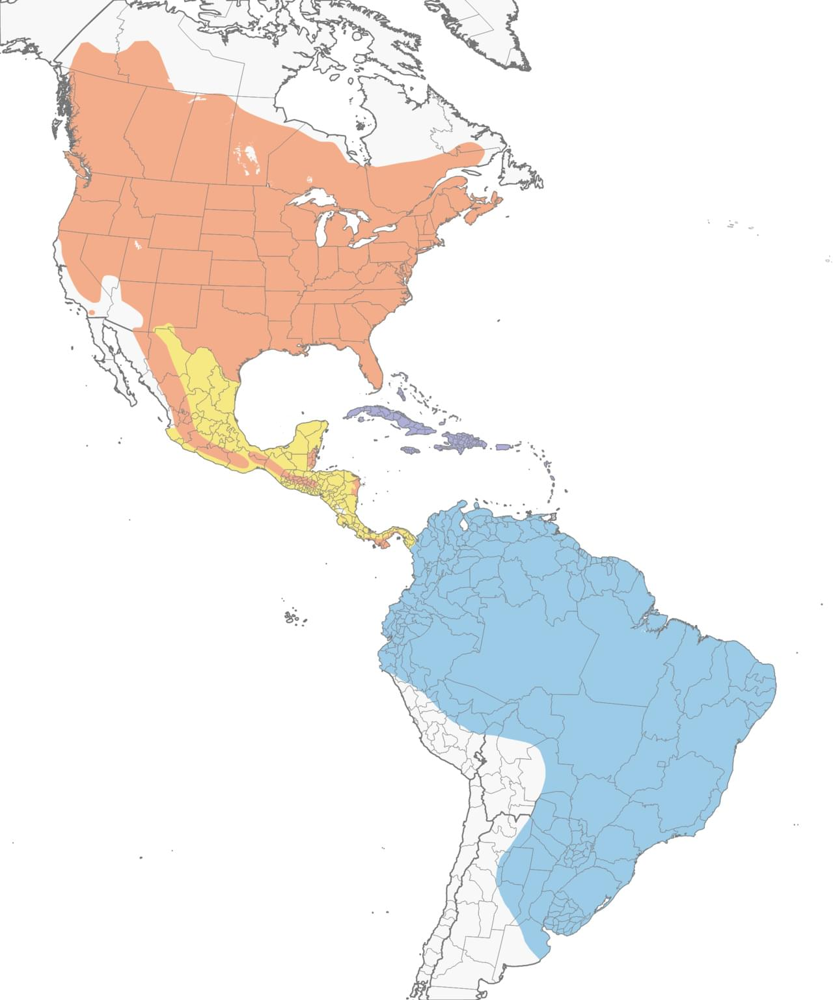

Quick Facts
- Size: 8-10 inches
- Weight: 2-4 ounces
- Lifespan: 4-5 years; Some reach 10 years
- Conservation Status: Least Concern
- Range: Breeds across North America; winters in South America
Key Nighttime Adaptations
These birds possess exceptionally large and sensitive eyes adapted for low-light vision. Their pupils can dilate significantly on demand to help them locate and track insects. They have a cavernous gaping mouth surrounded by bristle-like feathers, allowing to fly through clusters of insects that gather at night, collecting them all at once.
Diet
Common nighthawks are insectivores. Unfortunately ALAN is not the only thing these birds need to worry about. The introduction of insecticides across farmlands is causing a decline in their populations as their primary food sources become scarce.
Role in Ecosystem
As aerial insectivores, nighthawks play a crucial role in controlling insect populations, thus maintaining the balance within their ecosystem. By consuming swarming pests such as mosquitoes, grasshoppers, beetles, and moths, they are an organic pest control service for crops and forests.
Fun Fact: When courting, the Common Nighthawk puts on an acrobatic display including a peent and a loud booming sound created by their dramatic dive through the air.

Light Pollution's Effect on Common Nighthawks
Artificial light at night can cause the common nighthawk to believe it is dawn sooner than it truly is. This can cause the bird to lose valuable hunting hours and disrupt its biological clock. The birds may wake earlier and begin hunting during daytime hours, putting them at risk of being seen and attacked by predators. Hunting grounds may become overcrowded as birds are drawn to artificially lit areas in search of bugs. This can lead to food scarcity and population decline.